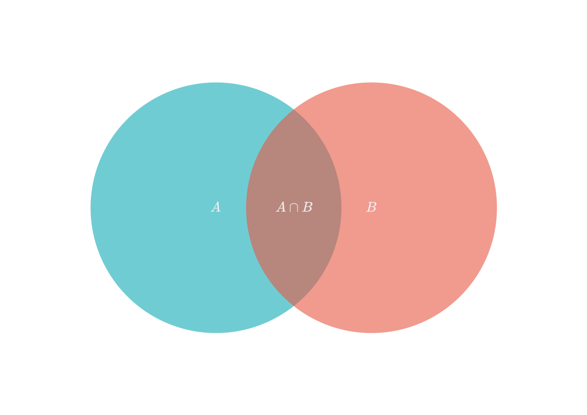

Mengder og tupler#
Lister er samlinger av objekter.
Det er mengder og tupler også, men de er litt forskjellige fra lister.
Tupler#
Tupler (tuples), som lister, har en tydelig rekkefølge, men en tuppel skal ikke kunne endres.
Vi skriver tupler med parantes (1, 2, 3), i stedet for klammeparantes [1, 2, 3].
a = [1, 2, 3] # Liste
b = (1, 2, 3) # Tuppel
print(type(a))
print(type(b))
<class 'list'>
<class 'tuple'>
Tupler er ofte brukt til punkter og vektorer som ikke skal endre seg i et program.
Mengder#
En mengde (set) er en måte å samle forekomster av objekter uten rekkefølge og uten gjentagende elementer.
Vi kan lage en tom mengde ved å skrive
a = set()Vi kan gjøre en liste om til en mengde ved å skrive
a = set(<liste>)Vi kan også bruke krøllparanteser, men ikke for å lage en tom mengde.
a = set()
b = set([1, 2, 3])
c = {}
d = {1, 2, 3}
print(type(a))
print(type(b))
print(type(c))
print(type(d))
<class 'set'>
<class 'set'>
<class 'dict'>
<class 'set'>
Vi ser at c blir tolket som en dict, en ordbok, ikke en mengde. Vi må bruke set() for å lage en tom mengde.
Legge til og fjerne objekter#
Vi kan legge til og fjerne objekter ved å bruke add()- og remove()-metodene.
a = set([1])
print(a)
a.add(4)
print(a)
a.remove(4)
print(a)
{1}
{1, 4}
{1}
Vi kan ikke legge til flere av samme objekt.
a = set([1, 2, 3])
print(a)
a.add(1)
print(a)
{1, 2, 3}
{1, 2, 3}
Finne unike objekter i en liste#
Vi kan finne alle unike objekter i en liste eller string ved å konvertere til en mengde.
tekst = "🦠💸🦠📗🍏💚💚💚🥦🥬🥬🥬🥬🥒🫑🫑📗🟢🟢💸💸🟩🍏💚🥦👽🥬🥬🥬🥬🥒🥒🫑🟢🟩📗"
mengde = set(tekst) # Konverterer listen til en mengde
print(mengde)
print(f"Det finnes {len(mengde)} forskjellige emojis i teksten.")
{'📗', '💸', '🍏', '🥒', '🟩', '👽', '🫑', '🦠', '🟢', '💚', '🥬', '🥦'}
Det finnes 12 forskjellige emojis i teksten.
Union og snitt#
Du har sikkert sett et venndiagram før.
Mengden \(A\) består av masse objekter. Det gjør også mengde \(B\). Noen elementer er til felles for disse, og dette kalles for snittet eller \(A \cap B\). Her er noen andre ting fra mengdeteori som er interessant for oss.
Objekter som er i \(A\) eller \(B\). Alle objekter.
\(A\cup B\).
\(A\) union \(B\).
A | B
Objekter som er i både \(A\) og \(B\).
\(A\cap B\).
\(A\) snitt \(B\).
A & B
Objekter som bare er i \(A\), ikke \(B\).
\(A\) \ \(B\)
A - B
Objekter som bare er i \(B\), ikke \(A\).
\(B\) \ \(A\)
B - A
Mengdene over kan vi få bruk for i Python.
A = {1, 2, 3, 4}
B = {3, 4, 5, 6}
print(f"A union B: {A | B}") # eller A.union(B)
print(f"A snitt B: {A & B}") # eller A.intersection(B)
print(f"A uten B: {A - B}") # eller A.difference(B)
print(f"B uten A: {B - A}") # eller B.difference(A)
A union B: {1, 2, 3, 4, 5, 6}
A snitt B: {3, 4}
A uten B: {1, 2}
B uten A: {5, 6}
Oppgaver#
Oppgave 1 😍
Under er to strings, a og b
a = "😎😋😎😆😉😉😉😉😉😊😊😋😆😘😅😘😆😉😋😉😋😅😍😉😋😎😍😆😋😆😉😍😉😉😅😘😅😋😅😊😋😎😎😅😘😍😍😘😆😎😋😆😍😍😉😘😉😅😍😘😉😆😋😆😉😊😆😉😎😅😘😆😋😊😊😉😉😎😆😋😍😅😊😅😆😅😆😘😋😅😆😎😊😎😘😘😍😉😊😍"
b = "🥲🥰🥲😍😘😚🥲😙😙😘😚😘😍🥲😍😗🥲😘😙😗😙🥰🥲😘😘😘🥲😚😘🥲🥰😗😚🥰😘😙😚😍😙😚😗😙🥲😗😙😚🥰😚😙😘🥲😙🥰🥰🥲🥲🥰🥲😚🥲🥰😗🥰🥰😙😘😙🥰🥰😗🥲😍😘😘😗🥰😚😚🥲😘😙😍🥰🥰🥰😗😙😙😘😚😗😚😚🥰😘😚🥰🥰😘😘"
Finn alle emojis som finnes i både
aogb.Finn alle emojis i begge tekstene.
Finn alle emojis som bare finnes i
a.Finn alle emojis som bare finnes i
b.
Fasit
{'😘', '😍'}{'😘', '😆', '😉', '😅', '😍', '😎', '😊', '😚', '😋', '🥲', '🥰', '😙', '😗'}{'😆', '😉', '😅', '😎', '😊', '😋'}{'😚', '🥲', '🥰', '😙', '😗'}
Oppgave 2 ✍️
Lag en funksjon unike_ord() som tar inn en string setning og returnerer hvor mange unike ord det er i setningen.
Store og små bokstaver skal ikke skille ordene. "Ord" er det samme som "ord".
Oppgave 3 ⚖️
Lag en funksjon like_ord() som tar inn to strings, setning1 og setning2, og returnerer en liste over alle ordene som finnes i begge setningene.
Store og små bokstaver skal ikke skille ordene. "Ord" er det samme som "ord".
Oppgave 4 🌹
Shakespeares fortelling om den forbudte forelskelsen mellom Romeo Montague og Juliet Capulet er en rivende kjærlighetshistorie med mange dramatiske vendinger.
Last ned filen romeo_and_juliet.txt
Finn ut hvor mange unike ord det er i hele tekstfilen.
Små og store bokstaver teller ikke som forskjellige ord.
"Word"telles som det samme ordet som"word"
Tegnene
",",")","(",".",";",":","_","]","[","?","!"skal ignoreres."Word!"telles som det samme ordet som"Word"og"Word.".
Tekst tatt fra Project Gutenberg (lenke).
Hint
Denne listen kan være til hjelp med å rense ordene.
tegn = [",", ")", "(", ".", ";", ":", "_", "]", "[", "?", "!"]
Fasit
Jeg fant \(4344\) unike ord med kravene gitt i oppgaven.
Det finnes sikkert andre, bedre måter å fjerne rare ord på.
Løsningsforslag
def fjern_tegn(word : str) -> str:
"""Hjelpefunksjon for å fjerne tegn som ikke er bokstaver fra ordene"""
for tegn in [",", ")", "(", ".", ";", ":", "_", "]", "[", "?", "!"]:
word = word.replace(tegn, "")
return word
with open("romeo_and_juliet.txt", encoding="utf8") as file:
words = set()
for line in file.readlines():
if line.strip() != "":
for word in line.strip().split():
words.add(fjern_tegn(word.upper()))
# Skriver ut lengden uten tomme ord ''
print(len(words - {''}))